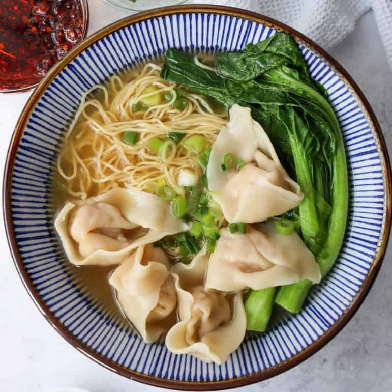

Wonton Noodle Soup

Description
Soup with wontons!
Ingredients
Wonton
- 50 - 60 wonton wrappers
- 200 g / 7 oz lean pork mince (ground pork)
- 200 g / 7 oz peeled prawns / shrimp , roughly chopped
- 1 tbsp ginger , finely grated (1.5″ / 3cm piece)
- 2 shallots / green onions , finely chopped (5 tbsp)
- 1 tbsp light soy sauce
- 2 tbsp Chinese cooking wine (Shaoxing wine)
- 1/2 tsp salt
- 2 tbsp sesame oil, toasted
Broth
- 3 cups / 750 ml chicken broth
- 2 garlic cloves
- ⅓” / 1 cm piece of ginger , sliced (optional, but highly recommended)
- 1½tbsp light soy sauce
- 2 tsp sugar (any)
- 1½ tbsp chinese cooking wine
- ¼ - ½ tsp sesame oil
To Serve
- Shallots / scallions , finely chopped
- Bok choy , quartered, or Chinese broccoli cut into 10cm /4″ lengths (optional)
- 40 - 50 g / 1.5 - 1.75 oz dried egg noodles per person , (optional)
Steps
Wontons
- Place Filling ingredients in a bowl. Use a potato masher to mash until fairly smooth - about 20 mashes. Don't turn the prawn into a complete paste, small chunks are good.
- Lay Wontons on work surface. Use 2 teaspoons to put the Filling on the wontons. Work in batches of 5 if starting out, up to 15 or 20 if confident. Brush 2 edges with water. Fold to seal, pressing out air. Brush water on one corner and bring corners together, pressing to seal.
- Place wrapped wontons into a container with a lid as you work (so they don't dry out).
Cooking/Freezing
- To cook: bring a large pot of water to boil. Place wontons in water and cook for 4 minutes or until they float. Remove with slotted spoon straight into serving bowls. Ladle over broth.
- To freeze: Freeze uncooked in airtight containers. Cook from frozen for 6 to 8 minutes. IMPORTANT: Do not freeze if you made this with defrosted frozen prawns.
Broth
- Place Broth ingredients in a saucepan over high heat. Add white ends of scallions/shallots if leftover from Wonton filling.
- Place lid on, bring to simmer then reduce to medium high and simmer for 5 - 10 minutes to allow the flavours to infuse. Pick garlic and ginger out before using.
- If using vegetables, blanch in the soup broth and place in serving bowl.
Assemble Soup
- Prepare noodles according to packet directions (if using noodles). Place in serving bowl with cooked wontons and blanched vegetables.
- Ladle over soup. Serve!